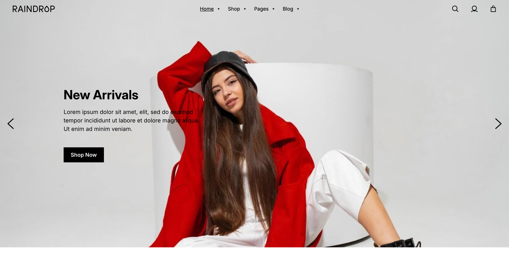

Documentation
Raindrop Block Theme
Thank you for purchasing our item from themeforest.

- Version: 1.0
- Author: Zero Studios
- Created: 25 October, 2025
- Update: 25 October, 2025
If you have any questions that are beyond the scope of this help file, Please feel free to email via Item Support Page.
Theme Requirements
To install and use this theme, ensure your WordPress site meets the following requirements: WordPress version 6.4 or higher and PHP version 7.4 or above.
Installation
Follow the steps below to activate your theme:
- After purchasing the theme, make sure to unzip the downloaded package first and find the theme zip file.
- Log into your WordPress admin dashboard. In the dashboard, go to
Appearance → Themes, where you’ll see an overview of available themes. - Click the Add New Theme button near the page title to start the theme installation process.
- Next, on the Add Themes screen, you’ll find the Upload Theme button. Click it to reveal the upload options.
Choose the theme ZIP file you downloaded earlier, then click Install Now to begin the installation. - When the theme is installed, a prompt will appear with an option to activate it immediately.
Simply click the Activate link, and your new theme will be live, ready for you to customize and build out your site!
Plugin Installation
When the theme is activated a message will appear with all the required and recommended plugins.
You can install all the required and recommended plugins from there.
The plugins are required for the theme to function optimally.
Theme Updates
You will be notified in the WordPress admin each time a new updated theme version is available.
Install the update following instructions below.
Automatic Theme Update
You can get automatic theme updates with help of Envato Market plugin.
Watch an instructional video on how to use the plugin, or read a complete, illustrated instructions on how to use it.
Automatic update failed?
If automatic update fails for whatever reason, please update the theme manually!
Manual Theme Update
Download the theme ZIP package from where you've obtained it originally. Then follow the steps below:
Updating via WordPress dashboard
A simple way of doing a manual theme update is deleting and reinstalling the theme directly via WordPress dashboard.
You can read an article or watch a video on how to do this.
Updating via FTP
This is more advanced manual update procedure and you will need an FTP client (such as FileZilla) to connect to your server:
- Download the newest theme ZIP file from where you've obtained it and unpack the ZIP file on your computer.
- Now you will need an FTP client to connect to your server.
- On your server navigate to WORDPRESS_FOLDER/wp-content/themes/ folder.
- Delete the existing raindrop folder (or create a backup just in case - you can do this simply by renaming the folder name by appending
.backup to its name so it becomes raindrop.backup, for example). - Copy the unpacked theme raindrop folder from your computer (from step 1 above) into WORDPRESS_FOLDER/wp-content/themes/ folder on your server.
- Log into your WordPress admin area and check the version of the theme in
Appearance → Themes. Your theme should be updated now. (And you can delete the raindrop.backup folder from step 4 above.)
Setup Home and Blog Page
Create a new page from Pages > Add New. Give a title, like ‘Home’, add the elements and settings you wish and then publish it.
Next, create another page with the title you want for your blog. You do not need any content for your main blog page.
The next thing is to tell WordPress to use your pages appropriately. Go to Settings > Reading and set the ‘Front page displays’ to ‘A static page’.
Set the home page you just created as the ‘Front page’, and the blog page you created as the ‘Posts page’ and save your changes.
Your Home and Blog pages are ready to go!

Demo Import
Appearance → Import Demo Data
With the latest block theme features in WordPress, creating a page similar to the demo no longer requires uploading demo content.
Instead, you can use pre-designed patterns, which are ready-made sections and layouts specifically crafted to match the demo style.
More on that in the patterns section.
But the theme still provides a demo importer to generate all the pages automatically and adds product images.
So you can use the demo importer if you don't want to create all the pages manually.
Use a Child theme
If you need to make coding changes to the theme or WordPress itself, use child theming functionality.
This way you can update the parent (original) Raindrop theme without worrying about your custom code getting overwritten and lost. Your code is kept safe in your child theme.
Useful resources
Child Themes Documentation
Block Editor
Raindrop is fully compatible with the WordPress block editor, offering support for wide alignment, custom color palettes, font sizes, and more.
With the block editor, you can build visually captivating and high-performing websites featuring creative layouts—without the need for a page builder plugin.
Explore our theme demo site for inspiration and ideas on how to make the most of these powerful design options.
Useful resources:
How to use the block editor
How to use the site editor
Patterns
Pages → + → Patterns → select category → choose pattern
Block Patterns are pre-designed groups of blocks that you can easily add to your posts and pages, then personalize with your own content.
They simplify a combination of many blocks, allowing you to quickly build sections of your site without starting from scratch.
Useful resources:
How to use block patterns

- On page/post edit screen (in block editor) click the block inserter button (the + button in the upper left corner of editor).
- Switch to "Patterns" tab.
(Optional: click the Explore all patterns button at the bottom of the list of pattern categories to open block pattern inserter pop-up window.)
- Choose a pattern category.
- Select a pattern you want to insert into your page/post content.
- Edit the inserted pattern to your needs.
Block Styles
select a block → styles tab → select style
You can change the block appearance simply by choosing a preferred predefined style from block settings.

- Click the block in page/post content.
- If block settings sidebar is not displayed, click the settings button in the upper right corner of the editor.
- Make sure you are editing the block settings (choose "Block" tab).
- In block settings click the styles tab.
- Choose a block style you want to apply on the selected block. (If there is no list of styles available, the selected block does not support any block style.)
Block Variations
select a block → transform to variation → select variation
A block variation is a block preset with specific attributes and even inner blocks. You can use the block variations for image zoom effects for example.

- Open the Block Inserter and search for the block variation.
- Select the Block tab.
- Choose the desired block variation from the list.
You can also select a block variation from the block sidebar.

- Select a block.
- Open the block sidebar.
- Click on Transform to variation.
- Choose the desired block variation.
Site Editor
admin dashboard → appearance → editor
Edit every aspect of your theme visually, using drag-&-drop block editor with no coding required. Create beautiful, customizable websites with a few clicks.
Modify colors and layout widths, reusable template parts, or whole templates.
Useful resources:
The site editor
Video about the site editor

Theme Styles
Appearance → Editor → Styles
Theme styles allow you to edit color, fonts, spacing and other style elements of the site.
Useful resources:
Theme styles overview
Theme styles video

Browse styles
There are pre-designed theme styles (including dark mode) that you can browse through and select, that will change the look of your site.

Typography
Here you can change the settings of fonts (like changing the default font) or changing font size presets.
You can also upload your own custom fonts including google fonts.
Useful resources:
Font library

Typograhpy settings.

Change typography settings for individual elements (like text, links, headings...).

Uploud your custom fonts.
Colors
Theme applies a palette of colors throughout the site elements. You can modify each individual color in the palette, modify WordPress default color palette, and add your own custom colors.

Color settings.

Change the default theme colors palette. You can also create your own custom color palette.

Change colors for individual elements (like text, background, links...).
Layout
In the layout section you can modify the content and wide width if needed. You can also adjust the padding and block spacing.
Note that all of the changes you make are across the whole site.

Individual Blocks
Change settings for individual blocks.

Block settings.

Select a block.

Change the blocks color, padding, margin, font size, etc...
You can also change the same settings when editing a page in the block settings sidebar.

Templates
Appearance → Editor → Templates → All templates
Templates are how you decide where things are placed within your theme. They are also used by Pages to display their information and design.
Useful resources:
Templates documentation
Template hierarchy

From here you can edit individual templates or create your own templates.
.png)
You can also edit templates from pages.
- Open the page sidebar.
- Click on the template name.
- Click on "Edit template".
- You can also swap the template.
Template Parts
Appearance → Editor → Patterns → All template parts
Template parts are global areas of your website, such as site header, site footer, post comments area, or sidebars.
They are sections reused in the theme templates. Updating the content of a template part will apply your updates to all of its occurrences across all templates at once.
Using template parts is ideal for modifying global theme sections that repeat across multiple templates at once.

Menu
Appearance → Menus
The Raindrop theme uses the Maxmegamenu plugin for its navigation menu. The plugin provides an easy way to create megamenus.

It uses the old menu system. So you can create your menus here.

You can also edit the look of the megamenu itself. Just go to Mega Menu → Menu Themes
Useful resources:
The Max Mega Menu Documentation
WordPress Menu User Guide
If you don't need megamenus, you can also use the default navigation block. In the header simply just replace the megamenu block with the default navigation block.
Go to Appearance → Editor → Patterns → Header

Once the header template part is opened:
- Open the list view sidebar.
- select the Max Mega Menu block.
- Click on the three dots to open the menu.
- Click on delete.

Next open the block inserter, then select the Navigation block and put it in the same spot where the Max Mega Menu block was.
.png)
If you have multiple menus you can switch them out from here.
- Select the Navigation block
- Select the menu tab.
- Click on the three dots next to the Menu
- Select a menu.
- You can also import classic menus.
Header
Appearance → Editor → Patterns → Header
The theme includes 4 different headers. You can change the header by going in to patterns (the theme also comes with a bottom header when in mobile view).

To swap the header, first delete it, then select a header pattern to replace it.
Edit the header
To edit the header just select the block you want to edit.

To change the site logo just click on replace and upload a different image.

Change the icon by clicking on replace, then upload a different image.

You can also change the mini cart icon among other settings.
Sticky header

You can make the header sticky (it will always stay on top when scrolling).
- Open the list view sidebar.
- Select the header name.
- Click on the Position dropdown.
- Select the Sticky position.
Transparent header

You can also make the header transparent (that only applies on the front page).
- Open the list view sidebar.
- Select the header name.
- Click on the Styles tab.
- Select the Transparent block style.
Footer
Appearance → Editor → Patterns → Footer
The theme comes with 6 different footers. You can change the footer by going in to patterns.

To swap the footer, first delete it, then select a footer pattern to replace it.
Edit the footer
You can edit it the same way as the header. Just select a block you want to edit.
Sidebar
Appearance → Editor → Patterns → All template parts → choose a sidebar
The theme provides multiple block patterns displaying a dedicated Sidebar template part. A template part was chosen for sidebar content management so you can edit the sidebar in one place and it will be updated everywhere the Sidebar template part is being used.

Edit the sidebar
You can edit it the same way as the header. Just select a block you want to edit.
Insert the sidebar

To insert a sidebar go to a template, in this case the Blog Home template (Appearance → Editor → Templates → Blog Home Template):
- Open the block insetrer.
- Search for the Sidebar block.
- Insert it into the desired spot.
You can also edit the sidebar from here.
Pages
Assign a template to a page


- On the page/post edit screen open the settings sidebar.
- Click on the Template name.
- Choose "Change template" from the list of options.
- Choose a desired template from the popup window and save your settings.
WooCommerce
WooCommerce is a plugin for your e-commerce website.
Useful resources
WooCommerce Documentation
Change the Shop pattern
Appearance → Editor → Templates → All templates → Product Catalog
The theme includes multiple shop patterns. To change the pattern:
- Open the list view sidebar.
- Click on the three dots by the block name ("Products Left Sidebar").
- Click on delete.

- Next open the block inserter.
- Go to the patterns tab.
- Select the pattern category "Raindrop Products".
- Select a pattern.
- Make sure tu put the new pattern in the same place as the previous pattern.
- Don't forget to Save all the changes.

.png)
Note that you have to this to all other shop templates (Products by Attribute, Products by Category and Products by Tag) aswell.
Shop pattern settings
To get more settings options you can turn off "Inherit query from template".
- First select the "Product Collection" block.
- Turn off the "Inherit query from template" setting.

After that a slider will appear in the block settings sidebar, where you can adjust the number of products that appear on the page.

Note that you should only do this in the Product Catalog template.
To chnage the number of products that are displayed in all of the Product templates go to Settings → Reading.
Then go to "Blog pages show at most" and change the value of how many posts (products) should be shown.

That setting will also apply to Blog pages.
Slider
The theme also comes with the Smart Slider plugin. You can create your own slides or you can import the Smart Slider demo data that comes with the theme.
Useful resources
Smart Slider Documentation
First locate the "Smart Slider demo data" that comes with the theme.
- Then go to Smart Slider in the admin side panel.
- Next click on "Dashboard".
- Click on "NEW PROJECT"

After that a popup will appear. Click on "Or Import Your Own Files".

Lastly drag and drop the import file to where it says "Upload File". Your Slider should now be importet.

Localization
Every WordPress theme contains some texts that need to be translated into your language if you are building a non-English website. This theme if fully translation ready.
Useful resources
Install WordPress in your language
Translate a theme
Method 1: Using Poedit
- Make a copy of the original raindrop/languages/raindrop.pot file.
- Rename the copied file now: add hyphen followed with your language code locale, and change the file extension to "po". For example, the German file would be named raindrop-de_DE.po.
- Use Poedit to translate the file and export (save) translation in "mo" file format.
- Upload translated raindrop-de_DE.mo and raindrop-de_DE.po file into your WordPress languages directory, into themes folder (such as /wp-content/languages/themes/raindrop-de_DE.mo (if the themes folder does not exist in your WordPress languages directory, create it).
Only do that in the child theme, otherwise all custom translation files will be deleted when you update the theme !
Method 2: Using Loco Translate
If you would like to translate the theme directly in your WordPress dashboard you need to use a specialized plugin. Check out Loco Translate plugin and instructions on how to use it at beginner's guide and technical overview.
You can also use Loco Translate plugin to translate your plugins directly in your WordPress admin area.